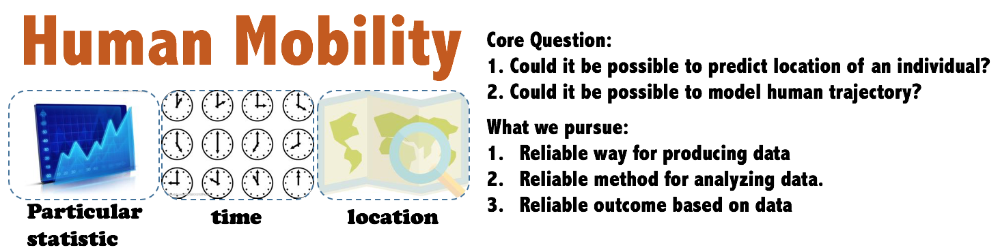
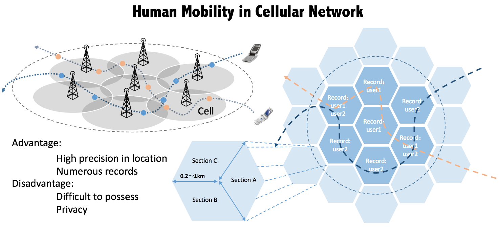
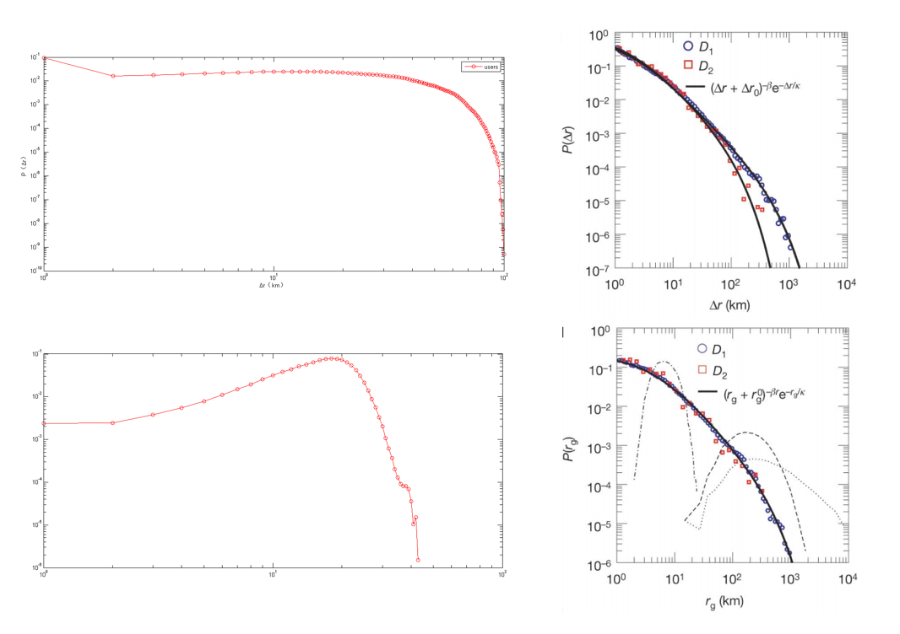
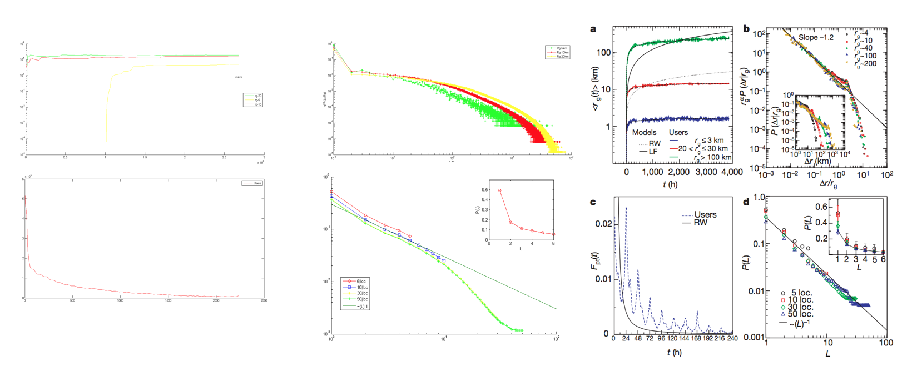
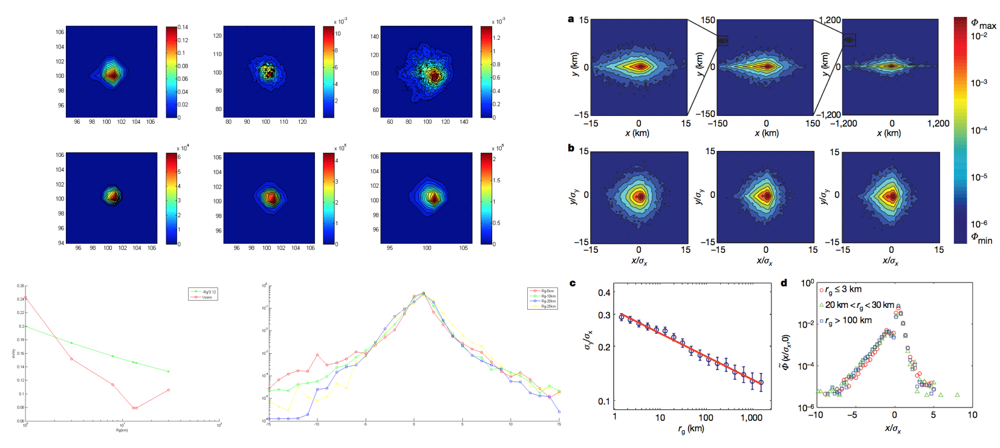
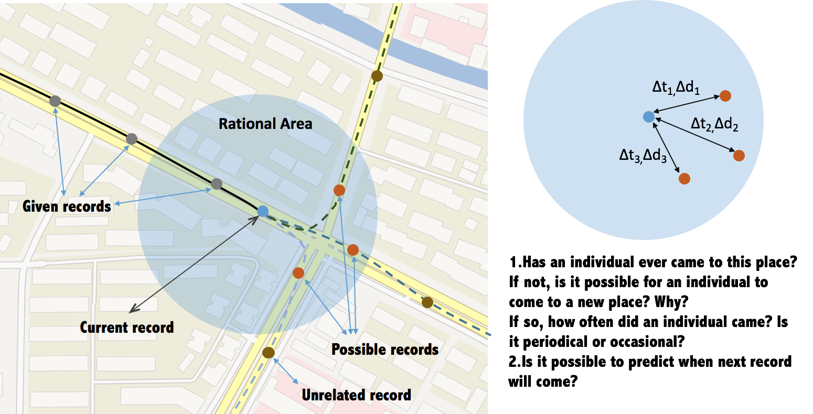

>移动性研究主要为探究移动过程中的规律。主要研究方法是通过移动数据采集，数据处理，归纳。最早的移动研究可追溯到从random walk模型的提出，之后有一些关于鸟类迁徙的移动模型。而后有提出levy flight的移动模型。基于该模型的建立，MIT的MC Gonzalez提出了移动距离指数分布的规律，这是human mobility的开创性研究结论。后续有提出移动间隔指数分布，常驻地点呈1/x分布等等。随着研究方法的不断改进以及实验数据的不断完备，移动规律逐渐被挖掘出来。之后该领域大体方向是从宏观的统计研究转向微观的轨迹研究，从单纯的分析转而与交通，城市规划，公共卫生，反恐安全，医疗等领域结合。
>我的工作是根据已有的数据，首先进行论文的验证，该论文为"Understanding human individual mobility patterns", 该论文的成果是Human Mobility领域的核心基础之一，他提出了移动距离指数分布，Rg回转半径的概念还有个人位置的概率密度函数。
>该数据由众多记录组成，记录包括：手机号码，连接起始时间，结束时间，连接基站号码等。通过基站的号码，我们可以知道基站的gps坐标。出于隐私保护的原因，手机号抹去后两位。若按抹去后的手机号进行归类，可分成大概150，000份数据。
>我们的数据基于蜂窝网络，可近似将基站gps等同于人的位置。因此我们在这里可以将人的移动等同于人在移动时间内在不同基站的跳动。尽管移动数据齐全，但是抹去手机号使得几个用户的数据混叠在一起，不能直接进行计算。因此首先理应先进行用户的分离，分离原则如下：1.起始时间和截止时间不能重叠 2.记录与记录之间的移动速度要合理
>根据论文，我画出了相同的图片，可以看出之间的异同。
  >我们主要关注结论之间的差异：1.与论文结论相比，移动距离在10km到20km的频率较高 2.回转半径在20km的频率较高，反而在0-15km的频率较低。 3.人的移动轨迹失去了周期性。 4.个人位置的归一化频率密度图并不如论文中的相近。
>我分析的主要原因是：1.数据之间的差异性：论文中所用的数据来自欧洲电话局的6个月的电话数据，而我们的数据来自上海电信的3G数据，电话数据很有可能可以得到精度更高的gps数据，而3g数据只能把gps近似为基站的gps数据。另外研究对象本身也有差异，比如说生活习惯，规律，出行选择等等。2.用户分离的方法：时间不重叠和移动速度合理是单个用户移动轨迹的必要条件，但不是充分条件，还有一些移动的性质和规律可能没有被挖掘。
>需要解决的问题：需要找出更多的移动性质和规律。换言之：我们要提出一个符合人类移动规律的模型。 